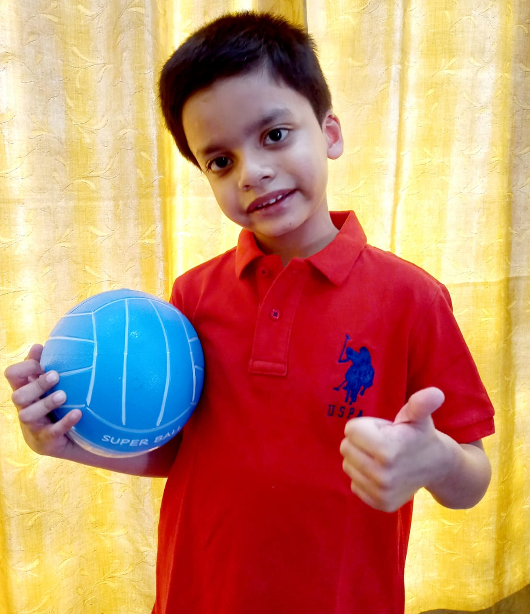

Maya
My friend in School has special needs,
Her name is Maya, and she does good deeds,
In her own special way, she tries to make us happy,
Some friends of mine, though, towards her are snappy,
I feel very sad when she cries,
As I know from my heart how much she tries,
When she wishes to walk, but can only crawl,
Some stand in the way, stare rudely and stall,
I am always there when she eats her food,
She looks up to me when down is her mood,
I once asked her to come home and saw the smile on her face,
She happily bent down to tie up her lace,
Her mother and my mother helped her to walk,
I walked beside her wanting to talk,
About all the good things that we did in School,
She smiled sadly and called me a fool,
Told me she was so bad that she could not sit on a stool
Without the help of a friend or a teacher,
She has never received help and asked me not to be a preacher.
I have always learnt to love and care,
I have learnt to help and not stare,
At people who have special needs,
Let us, from now, do some good deeds,
For people who require assistance and love
Instead of rudeness, a push and a shove.

Biography
Idhant is an eleven-year-old boy. He is in class six at Birla High School, Mukundapur,
Kolkata. He is fascinated by legos, dinosaurs, Pokémon, chess, badminton
and paddle tennis, not necessarily in that order. He is a sports enthusiast,
loves animals and wants to open rescue and rehabilitation centres for animals
who are abandoned and abused. He has also written four books on Bri- Books.